Shooting the Pictures
First, I shot these photos from my phone behind Li Ka Shing, Berkeley Way West, and Crescent Lawn. In class, we know that these form a homography because we're keeping the camera in one spot and taking photos which are a projective transform of one another.
Set 1
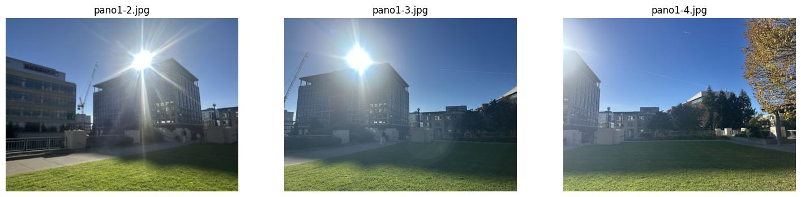
Set 2
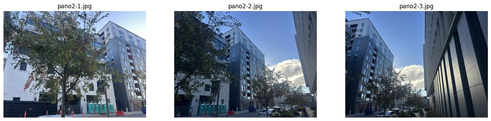
Set 3
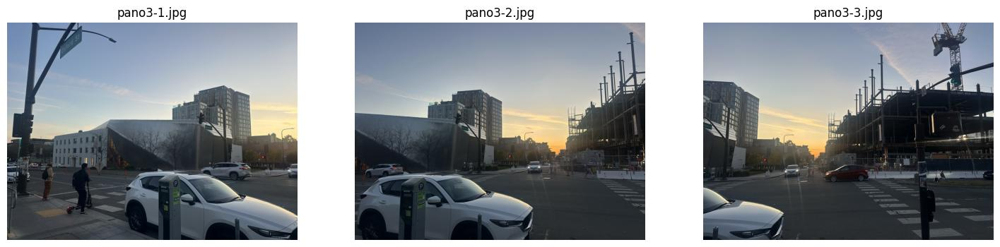
Recovering Homographies
A homography maps a point \( (x, y) \) in one image to \( (x', y') \) in another: \[ \begin{bmatrix} w x' \\ w y' \\ w \end{bmatrix} = \begin{bmatrix} a & b & c \\ d & e & f \\ g & h & 1 \end{bmatrix} \begin{bmatrix} x \\ y \\ 1 \end{bmatrix} \]
I did the algebra by dividing by w and isolating x' and y', yielding two linear equations. In matrix form:
\[ \begin{bmatrix} x & y & 1 & 0 & 0 & 0 & -x'x & -x'y \\ 0 & 0 & 0 & x & y & 1 & -y'x & -y'y \\ & & & & \vdots & & & \end{bmatrix} \begin{bmatrix} a \\ b \\ c \\ d \\ e \\ f \\ g \\ h \end{bmatrix} = \begin{bmatrix} x' \\ y' \\ \vdots \end{bmatrix} \]
We have to use four or more points because in a projective transform, there are 8 degrees of freedom (four points times two variables yields this). I decided to do 10 for each image just for sanity and annotated them with a tool I built.
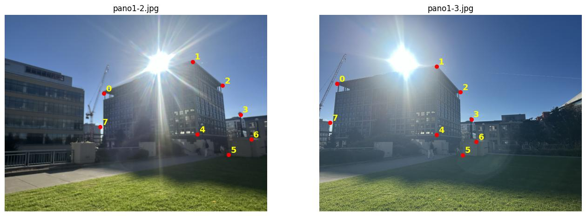
Solving with least squares gives the homography from pano1-2 to pano1-3: \[ H = \begin{bmatrix} 1.846 & -0.157 & -889.16 \\ 0.486 & 1.504 & -465.64 \\ 0.0006 & -0.0001 & 1 \end{bmatrix} \]
Warping the Images
Inverse warping, as opposed to forward warping, is where we loop through pixels in the output and use linear interpolation to ask the question, where (softly) did this pixel valeu come from? We implemented this using a bounding box and an alpha max for pixels that didn't have a source pixel.
Nearest Neighbor vs. Bilinear
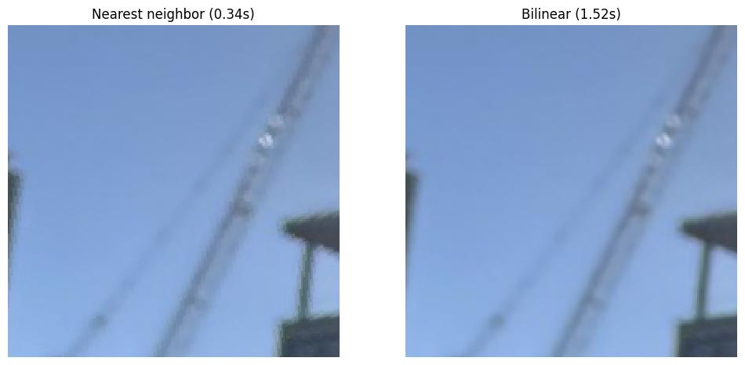
Nearest neighbor took 0.34s on my last run whereas bilinear took 1.52s, but you can see that diagonals are blurred to look smooth. Nearest neighbor runs faster but the image looks pretty pixelated.
Rectification
Rectification is basically annotating the corners of a rectangle then mapping them onto a real rectangle to "flatten" out the surrounding image. Here's my attempt with a shake shack sign and the service box of a tennis court:
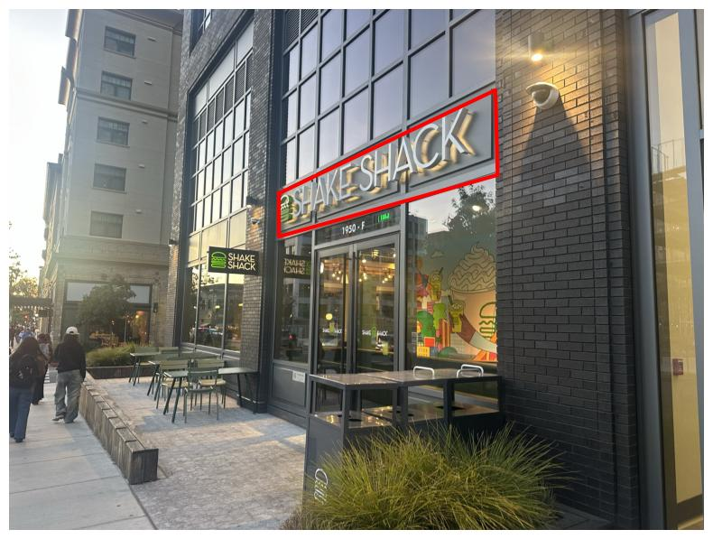
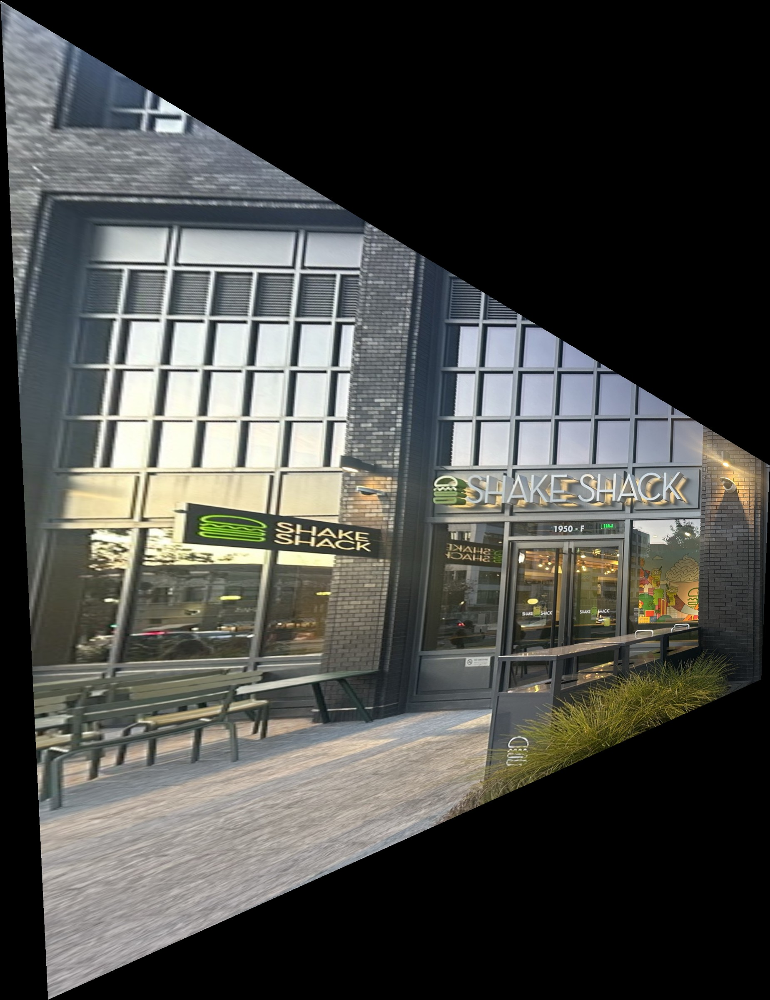
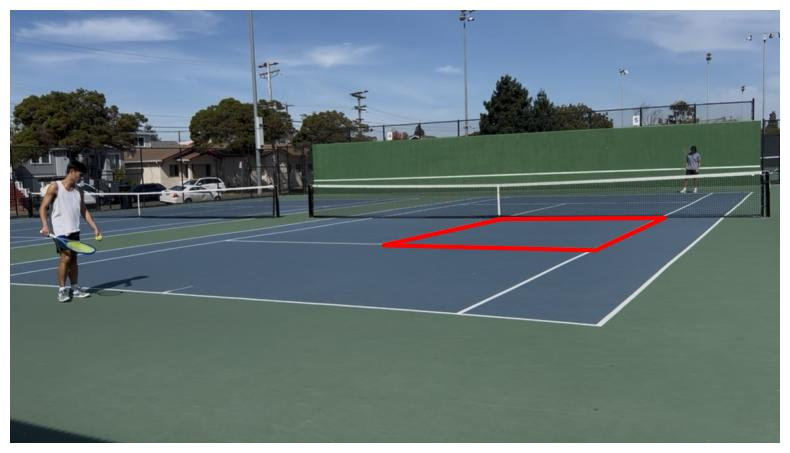
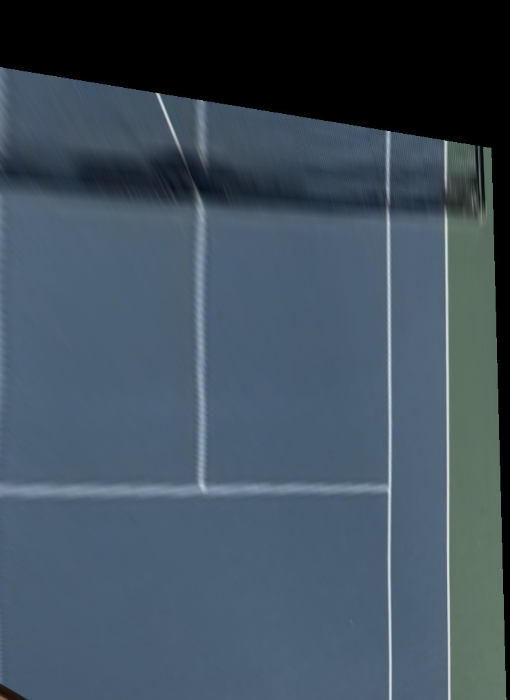
Blending into a Mosaic
Here are the pictures I took earlier again, but this time as a mosaic! Here I chose the middle image of each set as the reference and warped the left and right images to line up with the middle. We used feathering to smooth out the connection between images which required zero padding at the edges (we forgot this at first which caused a hard seam).
Mosaic 1
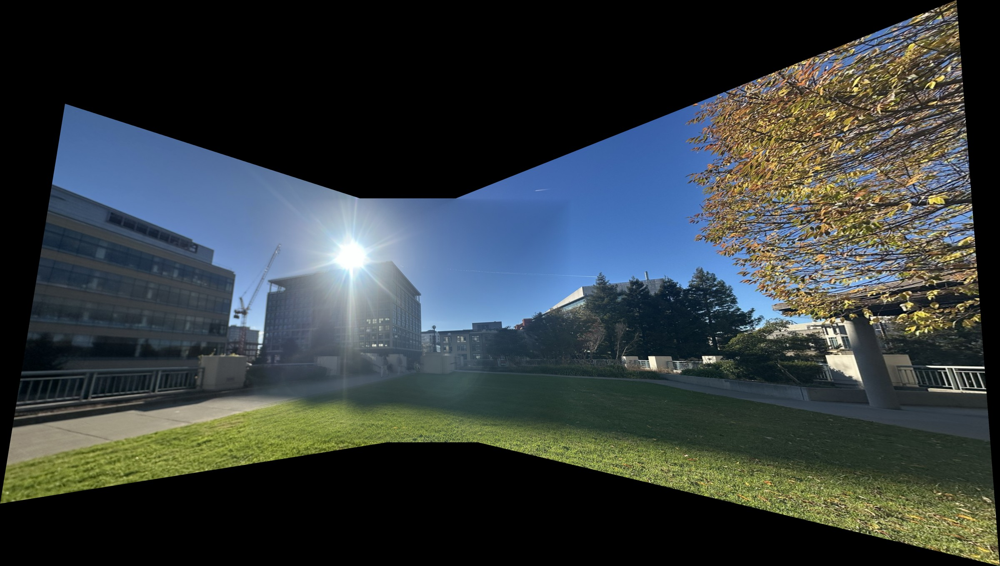
Mosaic 2
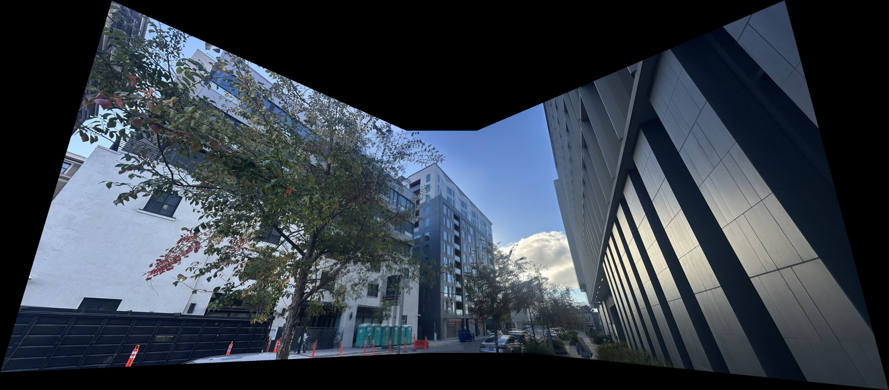
Mosaic 3
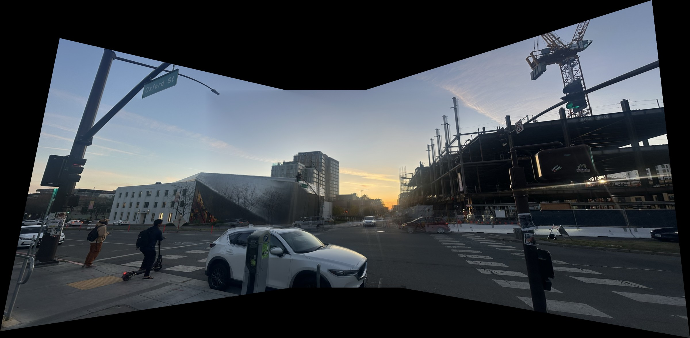
In this project I learned how to stitch together mosaics using homographies! Some things I learned were that misclicks could be super punishing (as one misaligned ledge in the first photo caused a distortion at first), moving things sometimes got distorted (you can see a faded red car in the last image), and that we have to do a lot of funky things to prevent seaming in the panoramas.
Feature Matching for Autostitching
Now, instead of clicking every correspondence by hand, we can auto-detect them using the paper we were assigned (MOPS by Brown, Szeliski and Winder).
Harris Corners and ANMS
In lecture, we learned we can classify a corner as an area where a window changes a lot in every direction you can go (for an edge it wouldn't change much in the direction along which the edge goes). Harris measures this with the second moment matrix \( M \). If both eigenvalues are large, the window changes in every direction along the 2D plane meaning it must be a corner. We can use the score \[ f = \frac{\det M}{\operatorname{tr} M} = \frac{\lambda_1 \lambda_2}{\lambda_1 + \lambda_2}, \] which is large when both \( \lambda \)'s are large.
The provided Harris code found 47,885 corners on one image, and many were in the grass or sky. By adding ANMS (below), we give corners a suppression radius: \[ r_i = \min_j \lVert x_i - x_j \rVert \quad \text{s.t.} \quad f(x_i) < 0.9\, f(x_j) \] which keeps the corners spread out. We only keep the 500 corners with the largest radius.
Comparing every pair of corners took too much memory, so I first kept the 20,000 strongest corners and processed them in chunks of 1,000.
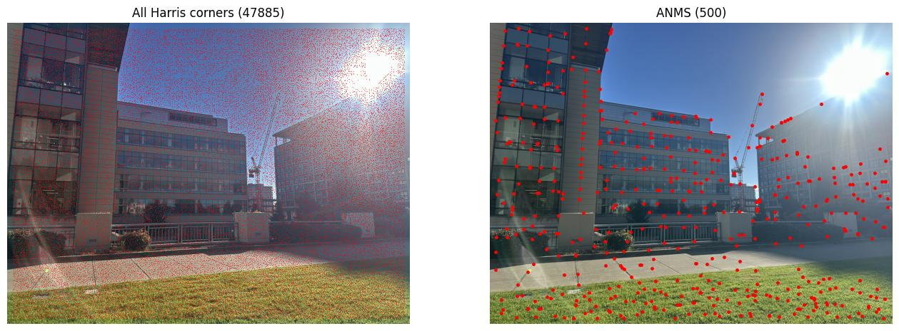
Feature Descriptors
We then assign each corner a descriptor by blurring the image then sampling an 8×8 grid every 5 pixels from the 40×40 window around each corner. Blurring makes the descriptor robust to Harris corners being off by 1-3 pixels. Each patch is then normalized to make them invariant to exposure then flattened into a vector.
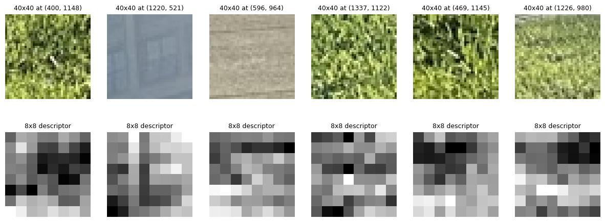
Feature Matching
For every descriptor in one image, we take the nearest and second-nearest neighbor in the other image, then use Lowe's ratio test: keep the match only if \[ \frac{e_{1\text{-NN}}}{e_{2\text{-NN}}} < 0.5. \] This rejects grass and repeated windows, because their best and second-best matches are about equally close, so the ratio is near 1.
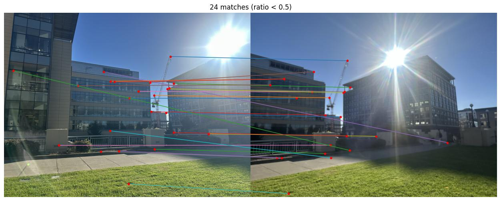
13 of the 24 matches aligned with what I annotated in the first part. We need to use RANSAC to fix the mismatches.
RANSAC and Automatic Mosaics
Least squares gets thrown off by bad matches, so RANSAC removes them through a "voting process." We pick 4 random matches, fit \( H \) to them, then count the number of matches that fall within 4 pixels under that \( H \). If the 4 picks were all correct, lots of other matches agree. After 3,000 iterations we keep the \( H \) with the most inliers, then refit with least squares on all of its inliers.
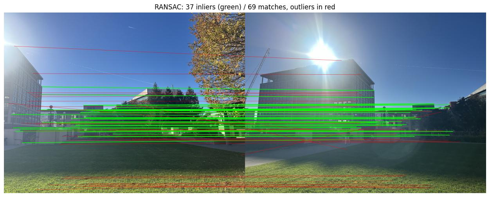
First I tried 500 corners with a Lowe's ratio 0.5 which broke on one pair, so I tuned it to 1,500 corners with Lowe's ratio set to 0.6. Here every pair landed within about 6-12 pixels (median) of my annotated points which was pretty accurate.
Here's a comparison between the mosaics with manual and automatic stitching:
Mosaic 1
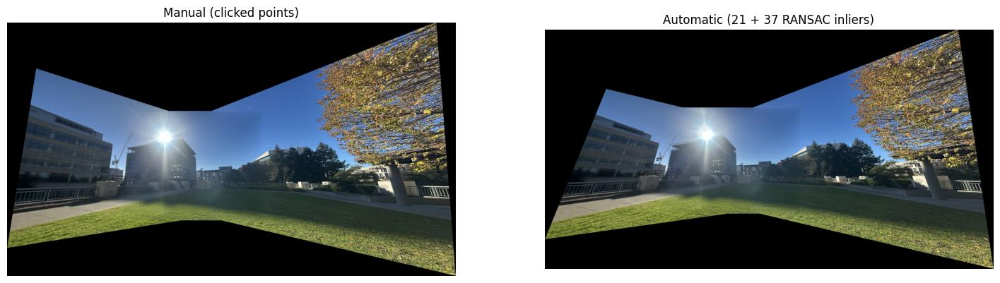
Mosaic 2
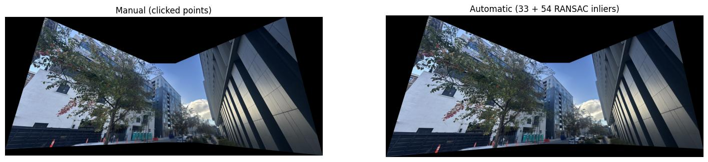
Mosaic 3
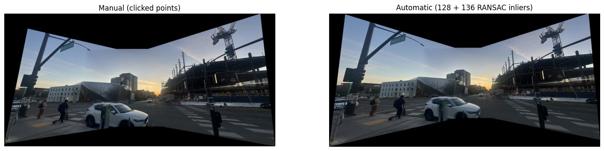
The automatic versions are about as good as the manual ones. In mosaic 3, the cars and crosswalk line up just a bit better because RANSAC fits to over a hundred inliers instead of ten!